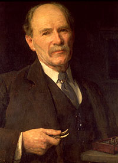

The British Museum was among the first museums to recognise that in-house scientific expertise was essential, both for the care of its collections and for their proper interpretation. The Research Laboratory was founded in 1920 with the appointment of Dr Alexander Scott as its first scientist. The work begun by Dr Scott continues today in the Departments of Scientific Research and Conservation.

Behind the scenes the Museum's scientists work with an array of specialist equipment, from the scanning electron microscope to X-radiography equipment of the type normally associated with hospitals. Science can help in the understanding of objects from all cultures and in their preservation for future generations. Interdisciplinary study, involving the collaborative efforts of curators, conservators and scientists, continues to take on new challenges and to find new solutions.